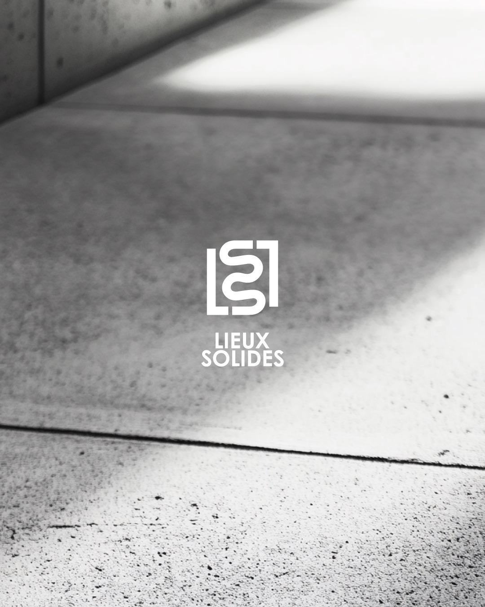
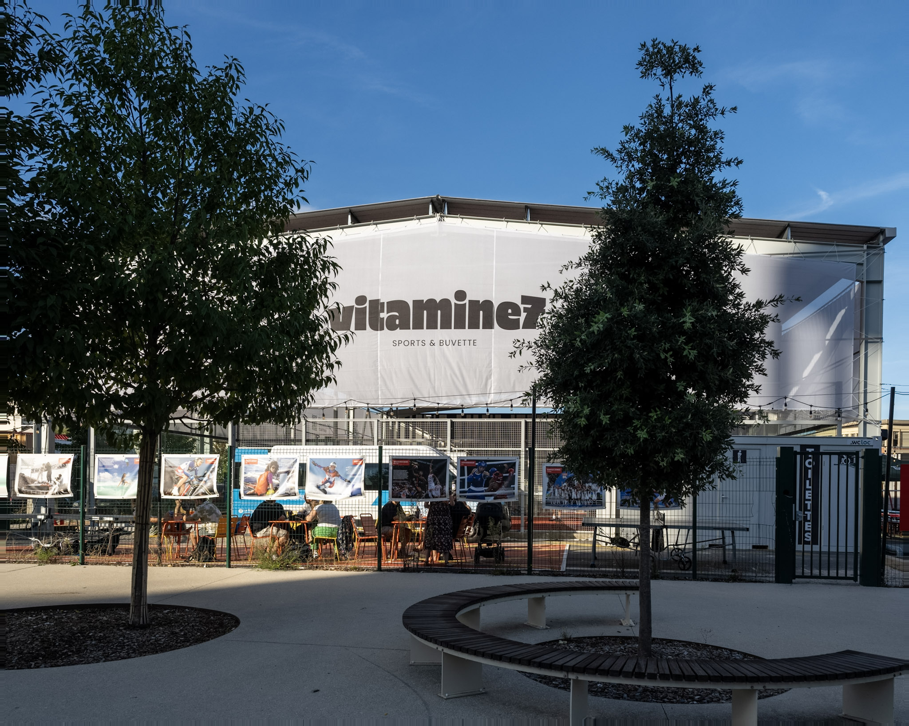
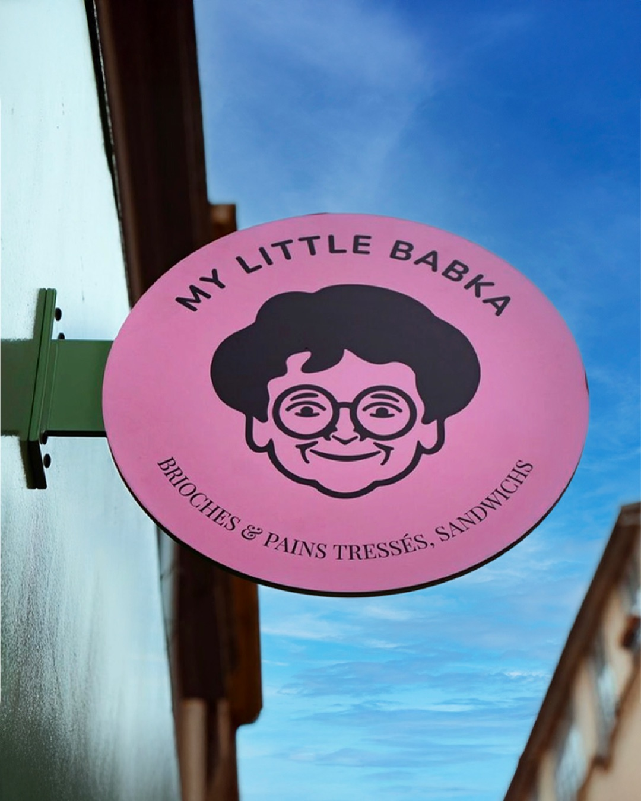

Je con\'e7ois des identit\'e9s visuelles ancr\'e9es dans l\'92histoire, les valeurs et les ambitions des lieux que j\'92accompagne.
\ Discuter d\'92un projet\
\Lieux Solides
\
\Vitamine 7
\
\My Little Babka
\Triumvirat
\Designer ind\'e9pendante bas\'e9e \'e0 Lyon, j\'92accompagne les commerces et lieux de vie dans la construction d\'92identit\'e9s fortes et coh\'e9rentes. Mon approche repose sur une compr\'e9hension fine de votre histoire, de vos valeurs et de vos enjeux pour cr\'e9er des syst\'e8mes visuels durables et pertinents.
\Strat\'e9gie de marque
\
Identit\'e9 visuelle
\
Direction artistique
\
Supports print & digitaux
\
D\'e9clinaisons sur lieu physique
Email : morgane.druet@gmail.com
\
T\'e9l\'e9phone : 0669137140
\
Instagram : @mini_studiodespentes
\
LinkedIn : morganedruet